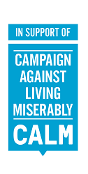
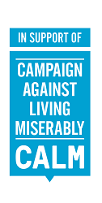

About
 

The Battle of the Beards runs from 8.30am at the Bierkeller on March 29th, 2017.
If you
care about IT stuff and care about people too then get yourself there.
We’re gonna have a fantastic
day learning about different IT topics, meeting nifty folks, and letting off a bit of steam. We’re gonna
be sociable (yes, I know we’re IT people) and have positive human interactions that make a difference in each
other’s lives.
Battle of the Beards started out as a fun user group event, where bristling techies would
square off in our very own arena. Our Beardy Battlers would give presentations and winners would be decided based
on the quality of their beards and their talks. The crowd went wild (and wanted more)!
Where our first
events had a mere 3 contenders, this year we’re upping the ante and there’ll be at least 10 contenders!
Whether their beard is permanent or just for the day, our Beardy Battlers will be delivering half-hour techie
talks that’ll be useful and engaging for anyone in IT. Every Beardy Battler will make a difference to your
life.
If you come along you’ll make a difference.
You’ll make a difference in the room
and to somebody you may never meet. That’s because, after we’ve covered the costs, all proceeds will
go to the Campaign Against Living Miserably (CALM). Supporting CALM
means they can provide vital counselling services and save lives.
In our male dominated industry, we’re
likely to be disproportionately affected by suicide. It was the cause of a quarter of all deaths of 20 - 34 year
old males in 2014.
That’s a sad and uncomfortable fact.
We need to take care of ourselves and each other.
So
let’s have some fun for a good cause!
March 29, 2017
Battle of the Beards takes place on March 29th, doors opening at 8:30am
Informative
The talks will cover the breadth of IT, and perhaps beyond! All talks will be introductory or widely applicable to anyone in IT. There’ll be nifty case studies, introductions to languages, general computing talks around security, ethics, design patterns etc, and so on
Doing good
Help combat the problem of male suicide. Attend for a good time, help others have a good time, and raise funds that will support the Campaign Against Living Miserably (CALM), a male suicide awareness and prevention charity, in offering vital emergency counselling services to those in need
Lots of fun
As well as presentations in the main arena during the day, there’ll be lots of side things going on throughout the day and into the evening including Nerd Bring’n’Buy, game tournaments, and more
PS Beards are not an entry requirement! Whilst Bring your own Beard (BYOB) is nice, this is a day open to anyone who wants to learn and support a good cause.